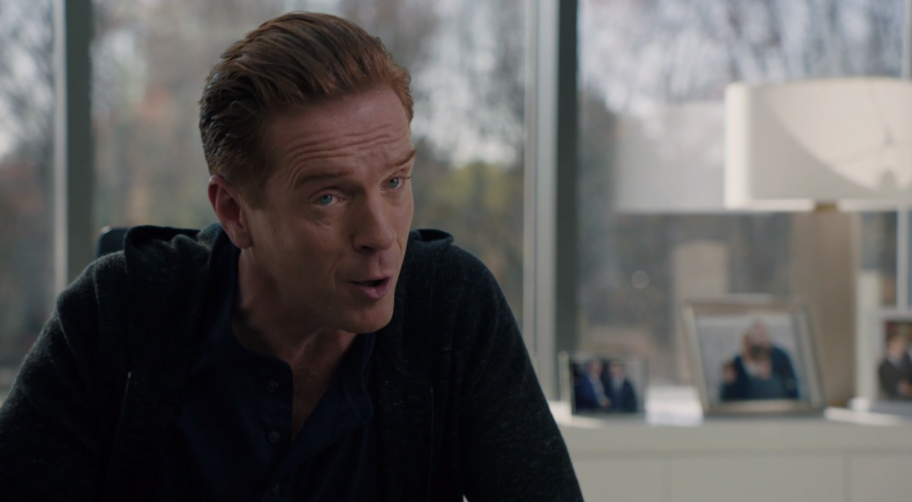

01
两周前的酒馆 → 一周前的公司
没有空头理由，就寻找能伤到谁的路径

剧情事实酒馆债务人 斯莱顿 被殴打后承诺做任何事还钱。画面转至一周前：瓦格斯 说 Ice Juice 基本面获市场认同，找不到自然的做空理由；泰勒查到老查克现金紧张却能投资。阿克斯由艾拉和老查克的关联，想到一箭伤及两个人。[1][2]
这一场为什么重要 · 个人解读
这些早期倒叙先交出可用的人和攻击欲望，却没有交出另一个阵营全部在做什么。阿克斯要的不是发现市场误价，而是让自己憎恨的人遭到损失。泰勒提供的财务分析只说明资金来源值得追问，不能直接证明儿子的信托已参与；阿克斯此时还没有查明具体出资人。
因此 → 阿克斯开始准备人为打击，而不是等待公司自行出现经营问题。